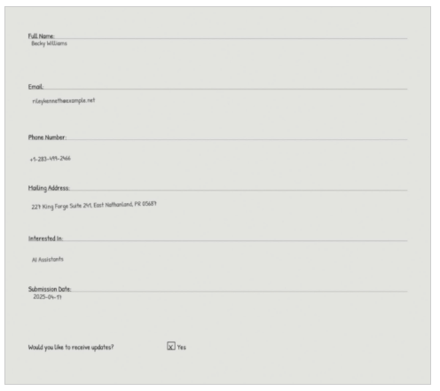

Blog 3
How to export to Amazon S3 Tables by using AWS Step Functions Distributed Map
by Chetan Makvana and Aidan Eglin on 01 OCT 2025 in Advanced (300), Amazon S3 Tables, AWS Step Functions, Serverless, Technical How-to
Companies running serverless workloads often need to perform extract, transform, and load (ETL) operations on data files stored in Amazon Simple Storage Service (Amazon S3) buckets. Though traditional approaches such as an AWS Lambda trigger for Amazon S3 or Amazon S3 Event Notifications can handle these operations, they might fall short when workflows require enhanced visibility, control, or human intervention. For example, some processes might need manual review of failed records or explicit approval before proceeding to subsequent stages. Customer orchestration solutions to these issues can prove to be complex and error prone.
AWS Step Functions address these challenges by providing built-in workflow management and monitoring capabilities. The Step Functions Distributed Map feature is designed for high-throughput, parallel data processing workflows so that companies can handle complex ETL jobs, fan-out processing, and data visualization at scale. Distributed Map handles each dataset item as an independent child workflow, processing millions of records while maintaining built-in concurrency controls, fault tolerance, and progress tracking. The processed data can be seamlessly exported to various destinations, including Amazon S3 Tables with Apache Iceberg support.
In this post, we show how to use Step Functions Distributed Map to process Amazon S3 objects and export results to Amazon S3 Tables, creating a scalable and maintainable data processing pipeline.
See the associated GitHub repository for detailed instructions about deploying this solution as well as sample code.
Solution overview
Consider a consumer electronics company that regularly participates in industry trade shows and conferences. During these events, interested attendees fill out paper sign-up forms to request product demos, receive newsletters, or join early access programs. After the events, the company’s team scans hundreds of thousands of these forms and uploads them to Amazon S3. Rather than manually reviewing each form, the company wants to automate the extraction of key customer details such as name, email address, mailing address, and interest areas. They’d like to store this structured data in S3 Tables with Apache Iceberg format for downstream analytics and marketing campaign targeting.
Let’s look at how this post’s solution uses Distributed Map to process PDFs in parallel, extract data using Amazon Textract, and write the cleaned output directly to S3 Tables. The result is scalable, serverless post-event data onboarding, as shown in the following figure.

The data processing workflow as shown in the preceding diagram includes the following steps:
- A user uploads customer interest forms as scanned PDFs to an Amazon S3 bucket.
- An Amazon EventBridge Scheduler rule triggers at regular intervals, initiating a Step Functions workflow execution.
- The workflow execution activates a Step Functions Distributed Map state, which lists all PDF files uploaded to Amazon S3 since the previous run.
- The Distributed Map iterates over the list of objects and passes each object’s metadata (bucket, key, size, entity tag [ETag]) to a child workflow execution.
- For each object, the child workflow calls Amazon Textract with the provided bucket and key to extract raw text and relevant fields (name, email address, mailing address, interest area) from the PDF.
- The child workflow sends the extracted data to Amazon Data Firehose, which is configured to forward data to S3 Tables.
- Firehose batches the incoming data from the child workflow and writes it to S3 Tables at a preconfigured time interval of your choosing.
With data now structured and accessible in S3 Tables, users can easily analyze them using standard SQL queries with Amazon Athena or business intelligence like Amazon QuickSight.
The data-processing workflow
EventBridge Scheduler starts new Step Functions workflows at regular intervals. The timeline for this schedule is flexible. However, When setting up your schedule, make sure the frequency aligns with how far back your state machine is configured to look for PDFs. For example, if your state machine checks for PDFs from the past week, you’d want to schedule it to run weekly. The Step Functions workflow subsequently performs the following three steps (note that these steps are steps 4, 5, 6, and 7 in the preceding workflow diagram):
- Extract relevant user data from the PDFs.
- Send the extracted user data to Firehose.
- Write the data to S3 Tables in Apache Iceberg table format.
The following diagram illustrates this workflow.

Let’s look at each step of the preceding workflow in more detail.
Extract relevant user data from PDF documents
Step Functions uses Distributed Map to process PDFs concurrently in parallel child workflows. It accepts input from JSON, JSONL, CSV, Parquet files, Amazon S3 manifest files stored in Amazon S3 (used to specify particular files for processing), or an Amazon S3 bucket prefix (allows iteration over file metadata for all objects under that prefix). The Step Functions automatically handles parallelization by splitting the dataset and running child workflows for each item, with the ItemBatcher field allowing to group multiple PDFs into a single child workflow execution (e.g., 10 PDFs per batch) to optimize performance and cost.
The following screenshot of the Step Functions console shows the configuration for Distributed Map. For example, we have configured Distributed Map to process 10 customer interest PDFs in a single child workflow.

The following image shows one example of these scanned PDFs, which includes the customer information that this post’s solution processes.

Each child workflow then calls the Amazon Textract AnalyzeDocument API with specific queries to extract customer information.
{
"Document": {
"S3Object": {
"Bucket": "<input PDFs bucket>",
"Name": "{% $states.input.Key %}"
}
},
"FeatureTypes": [
"QUERIES"
],
"QueriesConfig": {
"Queries": [
{
"Alias": "full_name",
"Text": "What is the customer's name?"
},
{
"Alias": "phone_number",
"Text": "What is the customer’s phone number?"
},
{
"Alias": "mailing_address",
"Text": "What is the customer’s mailing address?"
},
{
"Alias": "interest",
"Text": "What is the customer’s interest?"
}
]
}
}
The API analyzes each scanned PDF and returns a JSON structure containing the extracted customer information.
Send the extracted user data to Firehose
The child workflow then uses a Firehose PutRecordBatch API action with service integrations to queue the extracted customer information for further processing. The PutRecordBatch action request includes the Firehose stream name and the data records. The data records include a data blob from step 1 that contains extracted customer information, as shown in the following example.
{
"DeliveryStreamName": "put_raw_form_data_100",
"Records": [
{
"Data": "{\"full_name\":\"Anthony Ayala\",\"phone_number\":\"001-384-925-0701\",\"mailing_address\":\"38548 Joshua Wall Suite 974, East Heatherfort, OH 32669\",\"interest\":\"Fitness Trackers\",\"processed_date\":\"2025-05-01\"}"
},
{
"Data": "{\"full_name\":\"Becky Williams\",\"phone_number\":\"+1-283-499-2466\",\"mailing_address\":\"227 King Forge Suite 241, East Nathanland, PR 05687\",\"interest\":\"Al Assistants\",\"processed_date\":\"2025-05-01\"}"
}
]
}
Write the data to S3 Tables in Apache Iceberg table format
Firehose efficiently manages data buffering, format conversion, and reliable delivery to various destinations, including Apache Iceberg, raw files in Amazon S3, Amazon OpenSearch Service, or any of the other supported destinations. Apache Iceberg tables can be either self-managed in Amazon S3 or hosted in S3 Tables. Though self-managed Iceberg tables require manual optimization—such as compaction and snapshot expiration—S3 Tables automatically optimize storage for large-scale analytics workloads, improving query performance and reducing storage costs.
Firehose simplifies the process of streaming data by configuring a delivery stream, selecting a data source, and setting an Iceberg table as the destination. After you’ve set it up, the Firehose stream is ready to deliver data. The delivered data can be queried from S3 Tables by using Athena, as shown in the following screenshot of the Athena console.

The query results include all processed customer data from the PDFs, as shown in the following screenshot.
 This integration demonstrates a powerful, code-free solution for transforming raw PDF forms into enriched, queryable data in an Iceberg table. You can use these data for further analysis.
This integration demonstrates a powerful, code-free solution for transforming raw PDF forms into enriched, queryable data in an Iceberg table. You can use these data for further analysis.
Conclusion
In this post, we showed how to build a scalable, serverless solution for processing PDF documents and exporting the extracted data to S3 Tables by using Step Functions Distributed Map. This architecture offers several key benefits such as reliability, cost-effectiveness, visibility, and maintainability. By leveraging AWS services such as Step Functions, Amazon Textract, Firehose, and S3 Tables, companies can automate their document processing workflows while ensuring optimal performance and operational excellence. This solution can be adapted for various use cases beyond customer interest forms, such as invoice processing, application forms, or any scenario requiring structured data extraction from documents at scale.
Though this example focuses on processing PDF data and writing to S3 Tables, Distributed Map can handle various input sources including JSON, JSONL, CSV, and Parquet files in Amazon S3; items in Amazon DynamoDB tables; Athena query results; and all paginated AWS List APIs. Similarly, through Step Functions service integrations, you can write results to multiple destinations such as DynamoDB tables by using the PutItem service integration.
To get started with this solution, see the associated GitHub repository for deployment instructions and sample code.